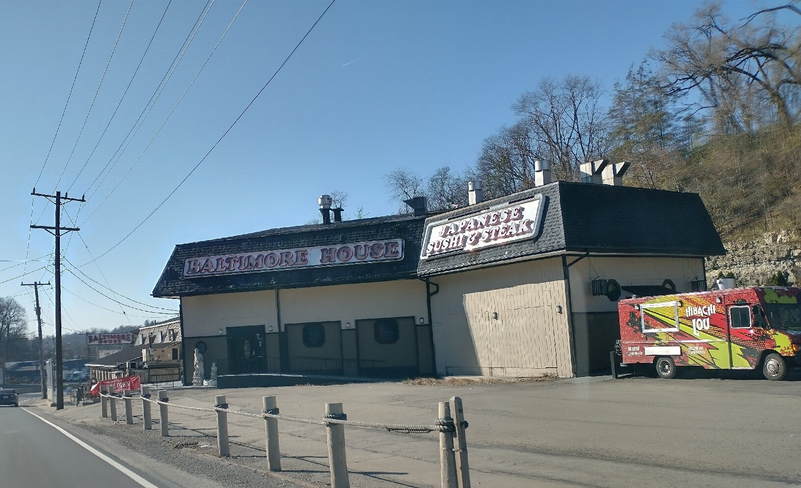

Live Maryland blue crabs
Arrive live every Thursday. The one thing Pittsburgh cannot get anywhere else, and it is buried behind a browser warning.
Right now baltimorehousepgh.com throws a broken SSL error before anyone sees a menu. Live Maryland blue crabs, two bars, banquet rooms, weekly live music, none of it visible online. This preview shows the simple fix.

Restore a basic, secure, working site instead of a browser warning screen.
Mobile-first layout built around the crab nights and weekly specials.
Hosting, backups, simple edits, no mystery subscription stack.
“Very good seafood, Maryland Steamed Crabs in season... a must visit.”